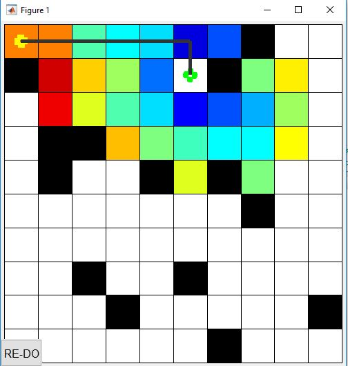

In computer science, A* is a computer algorithm that is widely used in pathfinding and graph traversal, the process of plotting an efficiently traversable path between multiple points, called nodes. Noted for its performance and accuracy, it enjoys widespread use. However, in practical travel-routing systems, it is generally outperformed by algorithms which can pre-process the graph to attain better performance, although other work has found A* to be superior to other approaches.
Peter Hart, Nils Nilsson and Bertram Raphael of Stanford Research Institute (now SRI International) first described the algorithm in 1968. It is an extension of Edsger Dijkstra's 1959 algorithm. A* achieves better performance by using heuristics to guide its search.
A* is an informed search algorithm, or a best-first search, meaning that it solves problems by searching among all possible paths to the solution (goal) for the one that incurs the smallest cost (least distance travelled, shortest time, etc.), and among these paths it first considers the ones that appear to lead most quickly to the solution. It is formulated in terms of weighted graphs: starting from a specific node of a graph, it constructs a tree of paths starting from that node, expanding paths one step at a time, until one of its paths ends at the predetermined goal node.
At each iteration of its main loop, A* needs to determine which of its partial paths to expand into one or more longer paths. It does so based on an estimate of the cost (total weight) still to go to the goal node. Specifically, A* selects the path that minimizes f(n)=g(n)+h(n)
where n is the last node on the path, g(n) is the cost of the path from the start node to n, and h(n) is a heuristic that estimates the cost of the cheapest path from n to the goal. The heuristic is problem-specific. For the algorithm to find the actual shortest path, the heuristic function must be admissible, meaning that it never overestimates the actual cost to get to the nearest goal node.
Typical implementations of A* use a priority queue to perform the repeated selection of minimum (estimated) cost nodes to expand. This priority queue is known as the open set or fringe. At each step of the algorithm, the node with the lowest f(x) value is removed from the queue, the f and g values of its neighbors are updated accordingly, and these neighbors are added to the queue. The algorithm continues until a goal node has a lower f value than any node in the queue (or until the queue is empty). The f value of the goal is then the length of the shortest path, since h at the goal is zero in an admissible heuristic.
The algorithm described so far gives us only the length of the shortest path. To find the actual sequence of steps, the algorithm can be easily revised so that each node on the path keeps track of its predecessor. After this algorithm is run, the ending node will point to its predecessor, and so on, until some node's predecessor is the start node.
As an example, when searching for the shortest route on a map, h(x) might represent the straight-line distance to the goal, since that is physically the smallest possible distance between any two points.
If the heuristic h satisfies the additional condition h(x) <= d(x, y) + h(y) for every edge (x, y) of the graph (where d denotes the length of that edge), then h is called monotone, or consistent. In such a case, A* can be implemented more efficiently-roughly speaking, no node needs to be processed more than once and A* is equivalent to running Dijkstra's algorithm with the reduced cost d'(x,y) = d(x, y)+h(y)-h(x).
Additionally, if the heuristic is monotonic (or consistent, see below), a closed set of nodes already traversed may be used to make the search more efficient.
Testing with sample input map
map = false(10);
% Add an obstacle
map (1:5, 6) = true;
start_coords = [6, 2];
dest_coords = [8, 9];
%%
close all;
[route, numExpanded] = AStarGrid (map, start_coords, dest_coords);
---->

function [route,numExpanded] = AStarGrid (input_map, start_coords, dest_coords)
% Run A* algorithm on a grid.
% Inputs :
% input_map : a logical array where the freespace cells are false or 0 and
% the obstacles are true or 1
% start_coords and dest_coords : Coordinates of the start and end cell
% respectively, the first entry is the row and the second the column.
% Output :
% route : An array containing the linear indices of the cells along the
% shortest route from start to dest or an empty array if there is no
% route. This is a single dimensional vector
% numExpanded: Remember to also return the total number of nodes
% expanded during your search
% set up color map for display
% 1 - white - clear cell
% 2 - black - obstacle
% 3 - red = visited
% 4 - blue - on list
% 5 - green - start
% 6 - yellow - destination
cmap = [1 1 1; ...
0 0 0; ...
1 0 0; ...
0 0 1; ...
0 1 0; ...
1 1 0;
0.5 0.5 0.5];
colormap(cmap);
% variable to control if the map is being visualized on every
% iteration
drawMapEveryTime = true;
[nrows, ncols] = size(input_map);
% map - a table that keeps track of the state of each grid cell
map = zeros(nrows,ncols);
map(~input_map) = 1; % Mark free cells
map(input_map) = 2; % Mark obstacle cells
% Generate linear indices of start and dest nodes
start_node = sub2ind(size(map), start_coords(1), start_coords(2));
dest_node = sub2ind(size(map), dest_coords(1), dest_coords(2));
map(start_node) = 5;
map(dest_node) = 6;
% meshgrid will `replicate grid vectors' nrows and ncols to produce
% a full grid
% type `help meshgrid' in the Matlab command prompt for more information
parent = zeros(nrows,ncols);
%
[X, Y] = meshgrid (1:ncols, 1:nrows);
xd = dest_coords(2);
yd = dest_coords(1);
% Evaluate Heuristic function, H, for each grid cell
% Manhattan distance
H = abs(X - xd) + abs(Y - yd);
% Initialize cost arrays
f = Inf(nrows,ncols);
g = Inf(nrows,ncols);
g(start_node) = 0;
f(start_node) = H(start_node);
% keep track of the number of nodes that are expanded
numExpanded = 0;
% Main Loop
while true
% Draw current map
map(start_node) = 5;
map(dest_node) = 6;
% make drawMapEveryTime = true if you want to see how the
% nodes are expanded on the grid.
if (drawMapEveryTime)
image(1.5, 1.5, map);
grid on;
axis image;
drawnow;
end
% Find the node with the minimum f value
[min_f, current] = min(f(:));
if ((current == dest_node) || isinf(min_f))
break;
end;
% Update input_map
map(current) = 3;
%f(current) = Inf; % remove this node from further consideration
% Compute row, column coordinates of current node
[i, j] = ind2sub(size(f), current);
% *********************************************************************
% ALL YOUR CODE BETWEEN THESE LINES OF STARS
% Visit all of the neighbors around the current node and update the
% entries in the map, f, g and parent arrays
%
% pause(0.5)
ii=0;
jj=0;
if (i>1 && i<=nrows) %% UP
ii = i-1;
jj = j;
if (map(ii,jj)~=2 && map(ii,jj)~=3 && map(ii,jj)~=5)
if g(ii,jj) > (g(i,j) + (H(ii,jj)-H(i,j)))
g(ii,jj) = g(i,j) + (H(ii,jj)-H(i,j));
f(ii,jj) = g(ii,jj) + H(ii,jj);
map(ii,jj) = 4;
parent(ii,jj) = current;
end
end
end
if (i>=1 && i< nrows) % DOWN
ii = i+1;
jj = j;
if (map(ii,jj)~=2 && map(ii,jj)~=3 && map(ii,jj)~=5)
if g(ii,jj) > (g(i,j) + (H(ii,jj)-H(i,j)))
g(ii,jj) = g(i,j) + (H(ii,jj)-H(i,j));
f(ii,jj) = g(ii,jj) + H(ii,jj);
map(ii,jj) = 4;
parent(ii,jj) = current;
end
end
end
if (j>1 && j<=ncols) % LEFT
jj = j-1;
ii = i;
if (map(ii,jj)~=2 && map(ii,jj)~=3 && map(ii,jj)~=5)
if g(ii,jj) > (g(i,j) + (H(ii,jj)-H(i,j)))
g(ii,jj) = g(i,j) + (H(ii,jj)-H(i,j));
f(ii,jj) = g(ii,jj) + H(ii,jj);
map(ii,jj) = 4;
parent(ii,jj) = current;
end
end
end
if (j>=1 && j< ncols) %RIGHT
jj =j+1;
ii = i;
if (map(ii,jj)~=2 && map(ii,jj)~=3 && map(ii,jj)~=5)
if g(ii,jj) > (g(i,j) + (H(ii,jj)-H(i,j)))
g(ii,jj) = g(i,j) + (H(ii,jj)-H(i,j));
f(ii,jj) = g(ii,jj) + H(ii,jj);
map(ii,jj) = 4;
parent(ii,jj) = current;
end
end
end
numExpanded = numExpanded + 1;
%*********************************************************************
end
%% Construct route from start to dest by following the parent links
if (isinf(f(dest_node)))
route = [];
else
route = [dest_node];
while (parent(route(1)) ~= 0)
route = [parent(route(1)), route];
end
% Snippet of code used to visualize the map and the path
for k = 2:length(route) - 1
map(route(k)) = 7;
pause(0.1);
image(1.5, 1.5, map);
grid on;
axis image;
end
end
end